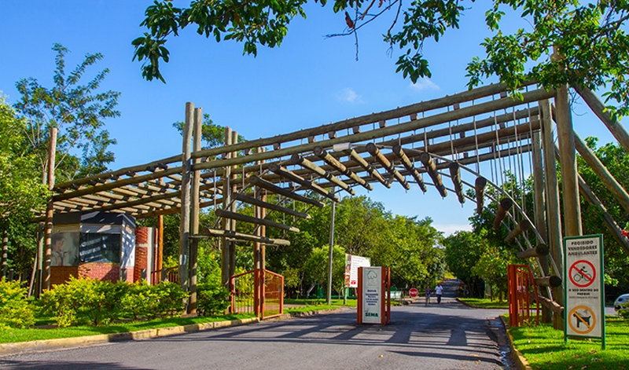

Viagens
- Rio de Janeiro (RJ)
Você sabia que o Rio de Janeiro é conhecido por suas belas paisagens, que misturam lindas praias, montanhas e florestas?
Seus principais pontos turisticos
- Cuiabá (MT)
Você sabia que Cuiabá é conhecido por sua cultura, diversidade gastronomica e por estar proximo do Pantanal?
Seus principais pontos turisticos Parque Mãe Bonifácia (Áreas verdes muito procurada para lazer). Arena Pantanal (Estádio contruido para Copa do Mundo de 2014). Chapada dos Guimarães (famoso por sua beleza natural, como cachoeiraas, trilhas e mirantes).

- Bonito (MS)
Você sabia que Bonito é conehcido por suas águas cristalinas, cachoeras e cavernas?
Seus pricipais pontos turisticos Gruta do Lago Azul (famosa pelo lago de água azul intenso dentro da caverna). Rio da Prata (conhecido pela flutuação em águas cristalinas). Parque das Cachoeiras(trilhas e diversas cachoeiras para visitar).